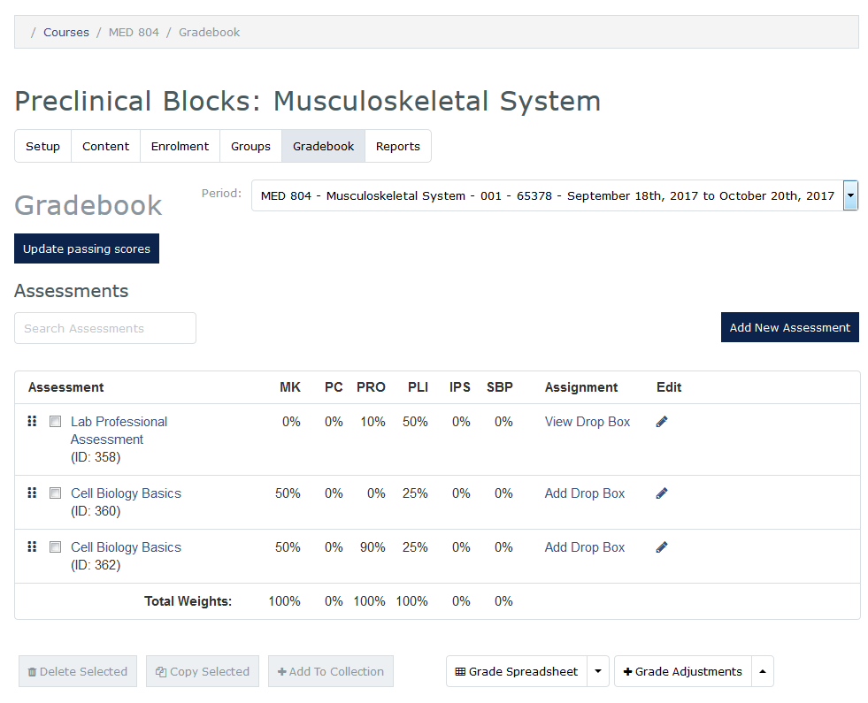

Gradebook
- Click the Courses tab
- Click on the applicable course
- Select Administrator View from the left menu
- Click the Gradebook tab

Update Passing Score
- Enter the passing score for each competency assessed in the course necessary to pass. For most courses this will be 70%.
Add/Edit New Assessment
- To add a new assessment click Add New Assessment
- Go through each step of the setup process indicating the competency weights of the assessment, due date, assessment type/characteristics, etc.
- Click Save when you have finished creating the new assessment.
- When editing an existing assessment, you can edit the same fields as when you create an assessment from scratch.
- Click Save after making any changes.
Manually Enter Assessment Scores
- Refer to the main Gradebook screen
- Click the name of the assessment that is being graded
- Scroll to the Grades section
- A table containing students enrolled in the course, NetID and competencies is displayed
- Competencies attached to the assessment are indicated with a “-“in the corresponding column
- Click the “-“to enter the score
- Enter a whole number
- Enter or tab to the next field
- The student’s score will be displayed as x/100
Import Assessment Scores
Grades can be imported from ExamSoft, NBME or from a “Generic” form. This function can also be used where grades have already been uploaded/entered and should be replaced with higher grades.
Please NOTE: Grades from ExamSoft will not be posted by FTP as in the past. You will have to download them from ExamSoft and import them into MedLearn. * Refer to the main Gradebook screen * Click the name of the assessment that is being graded * Press the Import Grades button * The Import Grades from file screen will be displayed * Press the Choose a file button * Indicate if you prefer to Replace with higher grades or Replace all grades * Press the Import file button
Enter Grade Adjustments
- Begin typing the student’s name in the search field to access the list of students
- Click the student’s name in the search results
- Press the add adjustment button
- A column for the student will be added to the grid
- Refer to the Competency column
- Select the applicable competency(s)
- Click the field in the Percentage column to enter the grade
- Add a Reason for the grade change
- Repeat for as many students as necessary
- Press the Close button to save grades and exit the screen
- If you would like to bulk import multiple grade adjustments you can do so via the Import button
Grade Spreadsheet
- If you would like to view student progress across all competencies assessed in a course, click on the Grade Spreadsheet button. This gives you a breakdown of student grades by competency.
- If you would like to look at the assessment grade details within a specific competency for a student, click on the percent showing.
- You can also export the grade spreadsheet to a CSV and view in Excel
Record Final Couse Grades and Retake Scores
The Grade Spreadsheet is also used to add final course grades, retake scores, reassessment scores, and remediation scores. * Refer to the main Gradebook screen * Press the Grade Spreadsheet button * Students are listed in the left column with competency grades in the columns to the right * Click in the Final Course Grade cell to select the final grade * Press the OK button to save the grade * Click corresponding cells to enter MK Retake, Behavioral Reassessment and/or Remediation scores